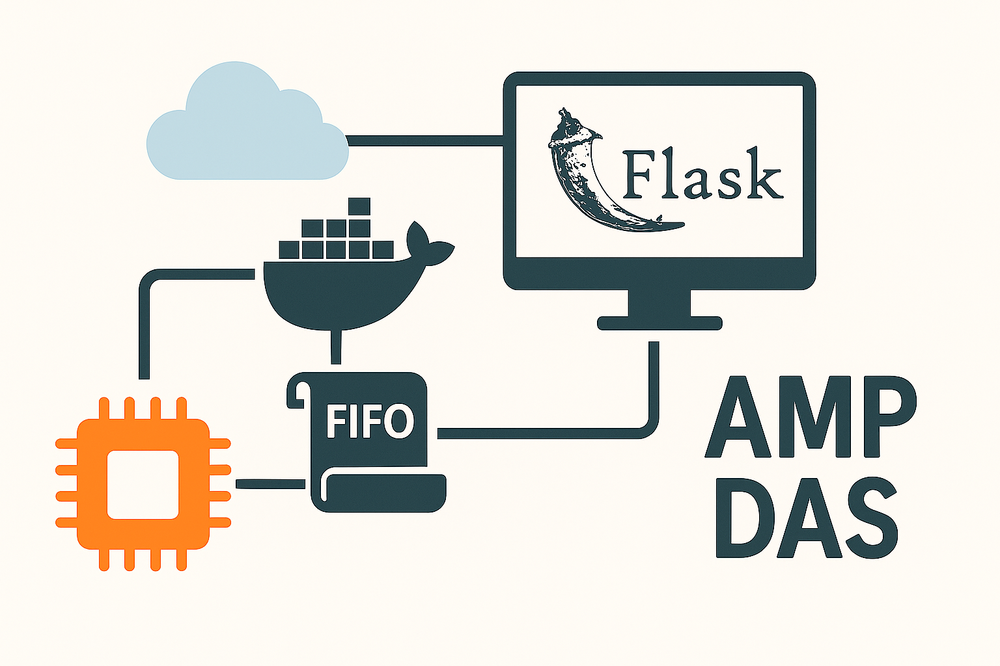

How to implement a DAS in Python for UE
Reference : RA 466
Description
This Reference Architecture describes how to create an AMP DAS in Python for the UltraEdge.
General Technical Info
| Component | Version |
|---|---|
| Language | Python |
| Framework | 3.11 |
| Environment | Any |
| IGXL | 10.60.02 |
Overview
Creating an AMP DAS for the UltraEdge is simple but requires a few steps.
First of all, an AMP DAS is an HTTP server. Using Python, there exists many solutions to create an HTTP server.
The standard solution is to use httplib2. This package is already available on the UltraEdge.
Another interesting solution is to use Flask.
Of course, any HTTP server of your choosing can be used.
In this reference architecture, we show how:
- to create an AMP DAS using Flask
- to bundle it in a Docker
- to read data from a FIFO
- to read files from the UltraEdge even if they are generated in the Docker
Architecture Overview
%%{init: {'theme':'base', 'themeVariables': {'primaryColor':'#E8F4F8','primaryTextColor':'#000000','primaryBorderColor':'#0078d4','lineColor':'#0078d4','secondaryColor':'#F0F9E8','tertiaryColor':'#FFF4E6'}}}%%
graph TB
subgraph TesterPC["Tester PC"]
AMP[AMP Service]
TP[Test Program
IGXL]
end
subgraph UltraEdge["UltraEdge PC"]
subgraph Docker["Docker Container"]
PyDAS[Python DAS
Flask Server]
LogFiles[Log Files]
end
FIFO[FIFO]
SharedFolder[Shared Folder
RAM Disk]
end
AMP -->|HTTP POST
TEST_START, TEST_END, TEST_DATA| PyDAS
PyDAS -->|HTTP 200 OK
MESSAGE_LIST| AMP
PyDAS -->|Write log filename
every 10 TEST_END| FIFO
PyDAS -->|Write logs| LogFiles
LogFiles -.->|Shared volume| SharedFolder
TP -->|Read FIFO| FIFO
TP -->|Download & Delete| SharedFolder
style TesterPC fill:#E8F4F8,stroke:#0078d4,stroke-width:2px
style UltraEdge fill:#F0F9E8,stroke:#16a34a,stroke-width:2px
style Docker fill:#FFF4E6,stroke:#f59e0b,stroke-width:2px
Sample application
For this reference architecture, we create a DAS in Python running on the UltraEdge. This DAS logs the following information:
TEST_START: site number and starting statusTEST_END: site number, binning, pass/fail, part idTEST_DATA: results, limits, pass/fail
The log filename is computed using a simple touchdowns counter.
In addition, every 10 TEST_END message, the current log filename is sent to a FIFO and a new log filename is computed and used.
On the tester host, the test program will attempt to read the FIFO at each end of test (in the OnProgramEnded interpose function).
If a log filename can be read, the test program will download this file from the UltraEdge PC to display its contents in the ProgramOutput.
It will also remotely delete this log file.
Data Flow Sequence
%%{init: {'theme':'base', 'themeVariables': {'primaryColor':'#E8F4F8','primaryTextColor':'#000000','primaryBorderColor':'#0078d4','lineColor':'#0078d4'}}}%%
sequenceDiagram
participant TP as Test Program
participant AMP as AMP
participant PyDAS as Python DAS
(Docker)
participant FIFO as FIFO
participant Logs as Log Files
Note over TP,Logs: Test Execution Begins
AMP->>PyDAS: POST TEST_START
PyDAS->>Logs: Log site number and status
PyDAS-->>AMP: 200 OK + MESSAGE_LIST
AMP->>PyDAS: POST TEST_DATA
PyDAS->>Logs: Log results, limits, pass/fail
PyDAS-->>AMP: 200 OK + MESSAGE_LIST
AMP->>PyDAS: POST TEST_END (count: 1-9)
PyDAS->>Logs: Log binning, part ID
PyDAS-->>AMP: 200 OK + MESSAGE_LIST
Note over PyDAS: After 10 TEST_END messages
AMP->>PyDAS: POST TEST_END (count: 10)
PyDAS->>Logs: Log binning, part ID
PyDAS->>FIFO: Write log filename
PyDAS->>Logs: Create new log file
PyDAS-->>AMP: 200 OK + MESSAGE_LIST
Note over TP,Logs: OnProgramEnded Interpose
TP->>FIFO: Read log filename
FIFO-->>TP: Return filename
TP->>Logs: Download log file
Logs-->>TP: File contents
TP->>TP: Display in ProgramOutput
TP->>Logs: Delete log file
Creating an AMP DAS with Flask
Flask defines a simple HTTP server and uses Python decorators to handle HTTP messages.
Note that
Flaskalone is not recommended for production.
However, it can be wrapped within tools such asWaitressto provide a robust solution.
See https://flask.palletsprojects.com/en/stable/deploying/ for more information.
An AMP URL is structured as follows:
http://{server}:{port}/{DAS name}/{parameters}
server,port, andDAS namecorrespond to the DAS definition in theAMPconfiguration on the tester. See more details in the next chapter.- The contents of
parameterswill vary according to the AMP message.
Example
http://10.100.100.1:5001/PyDAS/TEST_CELL/UFLEXPLUS1/LOT/LOT123/SUBLOT/42/TEST_START
Here, http://10.100.100.1:5001/PyDAS/ is the DAS defined in AMP.
In addition, we can see 4 parameters: TEST_CELL, LOT, SUBLOT, message name.
TEST_CELL, LOT, SUBLOT act as keywords in the URL and the value following the keywords correspond to that keyword.
UFLEXPLUS1is theTEST_CELLhostname of the tester PC.LOT123is the currentLOT42is the currentSUBLOTTEST_STARTis the AMP message.
Setting up a DAS with the AMP software
To setup a DAS for AMP on the tester PC, the following command must be used in an Administrator command line: ampshell -das add /n {DAS name} /u {DAS URL}
For example: ampshell -das add /n PyDAS /u http://10.100.100.1:5001/PyDAS/
Note that the
enable_das.batscript is provided in thesourcefolder to run this command for you.
Starting a Flask server
To run a Flask server, the following is required:
- Import Flask:
from flask import Flask - Create a Flask object:
app = Flask(__name__) - Start the server using a chosen port:
app.run(host='0.0.0.0', port=5001), the IP address 0.0.0.0 binds to the local host fo the UltraEdge and makes the server accessible from the tester PC.
Using the Flask route decorator
Flask defines a decorator route to simplify the management of specific URLs. In the case of AMP, this may come handy to manage each message.
For example, a function to manage TEST_DATA messages can be created and the Flask server automatically calls this function for each AMP TEST_DATA message received.\
Note that the
POSTmethod must be used for all AMP messages.
@app.route('/PyDAS/TEST_CELL/UFLEXPLUS1/LOT/LOT123/SUBLOT/42/TEST_DATA', methods=['POST'])
def handle_TEST_DATA():
...
There is one obvious limitation to this solution: the code must be updated for each tester PC, each lot and each sublot.
Fortunately, Flask allows placeholders in the URL string that are mapped to a function parameter, so the code can be updated as follows:
@app.route('/PyDAS/TEST_CELL/<string:cellhost>/LOT/<string:lotid>/SUBLOT/<string:sublotid>/TEST_DATA', methods=['POST'])
def handle_TEST_DATA(cellhost, lotid, sublotid):
...
Reusing our example, when the DAS receives the TEST_DATA message from AMP, the function handle_TEST_DATA is called with:
cellhost=UFLEXPLUS1lotid=LOT123sublotid=42
Bundling the application in a Docker
Since the UltraEdge is not accessible at all, installing new applications is not possible. Fortunately, using Docker containers is the solution to implement applications as we see fit.
In the source folder, a Dockerfile and a script to create a Docker package are provided.
See also, the RA 448 on creating a Docker file.
Reading data and file from the UltraEdge
The UltraEdge library available on the tester provides an API to read and write FIFOs defined on the UltraEdge PC.
In this example, the test program attempts to read the FIFO at each end of test and the AMP Python DAS writes to this FIFO every 10 TEST_END message.
The information written to the FIFO is the name of a log file to copy from the UltraEdge to the tester PC.
There is one piece missing: the application runs inside a Docker container and the log file is written inside this container. How can we copy this file?
The UltraEdge software automatically creates a shared folder between the UltraEdge RAM disk filesystem and any Docker container. Any file written to the folder within the Docker container will be visible on the UltraEdge RAM disk folder in the current session.
Log File Management Logic
%%{init: {'theme':'base', 'themeVariables': {'primaryColor':'#FFF4E6','primaryTextColor':'#000000','primaryBorderColor':'#f59e0b','lineColor':'#f59e0b'}}}%%
flowchart TD
Start([Receive TEST_END]) --> Count{Check
Message Count}
Count -->|Count < 10| LogData[Log test data to
current file]
Count -->|Count = 10| LogData10[Log test data to
current file]
LogData --> Increment[Increment counter]
Increment --> End([Done])
LogData10 --> WriteFilename[Write filename
to FIFO]
WriteFilename --> NewFile[Create new log file
Increment touchdowns]
NewFile --> ResetCounter[Reset counter to 0]
ResetCounter --> End
style Start fill:#E8F4F8,stroke:#0078d4,stroke-width:2px
style End fill:#E8F4F8,stroke:#0078d4,stroke-width:2px
style Count fill:#FFF4E6,stroke:#f59e0b,stroke-width:2px
style WriteFilename fill:#F0F9E8,stroke:#16a34a,stroke-width:2px
style NewFile fill:#F0F9E8,stroke:#16a34a,stroke-width:2px
Test program
In this sample, the test program sends the application to the UltraEdge and accesses the data required to display information.
In the test program, a module was created to take care of UltraEdge communication.
An initialization function (called UE_Start) is called after validation and does the following:
- Connects to the UltraEdge
- Starts a session
- Sets the FIFO up
- Sends the Docker file to the UltraEdge
- Tells the UltraEdge to load the Docker image
- Tells the UltraEdge to run a Docker container
Upon exiting IGXL, a function called UE_Stop (called in OnProgramClose) performs cleanup operations:
- Terminates the application
- Closes the FIFO
- Ends the session
- Disconnect from the UltraEdge
An additional function GetAndDisplayLogFile is invoked from the OnProgramEnded interpose function.
- Attempts to read data from the FIFO. If there is nothing to read, stop there.
- If the FIFO contains a string, this is the filename to get from the UltraEdge.
- Copy the file from the UltraEdge.
- Delete the file from the UltraEdge.
- Read the contents of the file.
- Display the contents to the ProgramOutput.
Source code
The API reference for the Python code can be found here
| Component | Comments |
|---|---|
pydas.py |
Python DAS running in a Docker on the UltraEdge |
uetrial.igxl |
Test Program |
SimulatedConfig.txt |
IGXL configuration file to simulate the test program channelmap |
Dockerfile |
Docker description file |
makedocker.sh |
Shell script to create the Docker package |
enable_das.bat |
Support script to add the DAS to AMP |
This documentation is part of the Teradyne Archimedes Reference Architecture series.